측량및지형공간정보산업기사 (2018-09-15 기출문제)
1과목: 응용측량
1. 횡단면도에 의하고 절토, 성토 단면의 단면산출에 주로 사용되는 방법으로 CAD 등의 면적 계산에 활용되는 것은?
- 자오선거법
- 심프슨 제1법칙
- 삼변법
- 좌표법
(정답률: 64%)

2. 하천의 수위관측소 설치 장소에 대한 설명으로 틀린 것은?
- 하안과 하상이 양호하고 세굴 및 퇴적이 없는 곳
- 상ㆍ하부가 곡선으로 이어져 유속이 최소가 되는 곳
- 교각 등의 구조물에 의하여 수위에 영향을 받지 않는 곳
- 지천에 의한 수위 변화가 생기지 않는 곳
(정답률: 66%)
3. 경사터널에서 경사가 60°, 사거리가 50m이고, 수평각은 관측할 때 시준선에 직각으로 5mm의 시준오차가 생겼다면 이 시준오차가 수평각에 미치는 오차는?
- 25“
- 30“
- 35“
- 41“
(정답률: 32%)
4. 하천에서 부지를 이용하여 유속을 측정하고자 할 때 유하거리는 보통 얼마 정도로 하는가?
- 100~200m
- 500~1000m
- 1~5km
- 하폭의 5배 이상
(정답률: 73%)
5. 철도의 종단곡선으로 많이 쓰이는 곡선은?
- 3차포물선
- 클로소이드곡선
- 원곡선
- 반향곡선
(정답률: 52%)
6. 단곡선 설치에서 곡선반지름이 100m일 때 곡선길이를 87.267m로 하기 위한 교각의 크기는?
- 80°
- 52°
- 50°
- 48°
(정답률: 55%)
7. 간출암의 높이를 결정하기 위한 기준면으로 사용되는 것은?
- 기본수준면
- 악최고고조면
- 소조의 평균고조면
- 대조의 평균고조면
(정답률: 48%)
8. 단곡선의 접선길이가 25m이고, 교각이 42°20‘일 때 반지름(R)은?
- 94.6m
- 84.6m
- 74.6m
- 64.6m
(정답률: 54%)
9. 그림과 같이 삼각형의 정점 A에서 직선 AP, AQ로 △ABC의 면적을 1:2:3으로 분할하기 위한 BP, PQ의 길이는?
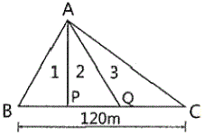
- BP=10m, PQ=30m
- BP=20m, PQ=60m
- BP=20m, PQ=40m
- BP=10m, PQ=60m
(정답률: 71%)
10. 지표에 설치된 중심선을 기준으로 터널 입구에서 굴착을 시작하고 굴착이 시작하고 굴착이 진행됨에 따라 터널 내외 중심선을 설정하는 작업은?
- 예측
- 지하설치
- 조사
- 지표설치
(정답률: 57%)
11. 해양에서 수심측량을 할 경우 음파 반사가 양호한 판 또는 바(Bar)를 눈금이 달린 줄의 끝에 매달아서 음향측심기의 기록지상에 이 반사체의 반향신호를 기록하여 보정하는 것은?
- 정사 보정
- 방사 보정
- 시간 보정
- 음속도 보정
(정답률: 60%)
12. 지하시설물 탐사작업의 순서로 옳은 것은?
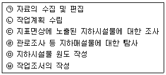
- ㉠-㉢-㉣-㉡-㉥-㉤
- ㉠-㉤-㉢-㉣-㉡-㉥
- ㉡-㉠-㉢-㉣-㉤-㉥
- ㉡-㉠-㉣-㉤-㉢-㉥
(정답률: 64%)
13. 그림과 같이 ∠AOB=15°, 반지름 R=10m일 때 △AOB의 넓이는?
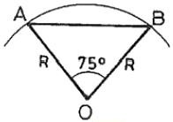
- 48.30m2
- 38.37m2
- 30.44m2
- 25.88m2
(정답률: 53%)
14. 철도 곡선부의 캔트량을 계산할 때 필요없는 요소는?
- 궤간
- 속도
- 교각
- 곡선의 반지름
(정답률: 69%)
15. 그림과 같은 사각형의 면적은?
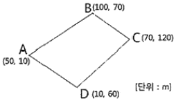
- 4850m2
- 5550m2
- 5950m2
- 6150m2
(정답률: 48%)
16. 하천측량에서 관측한 수위에 대한 설명 중 틀린 것은?
- 최고 수위(H.W.L) : 어떤 기간에 있어서 최고의 수위로 연(年)단위나 월(月)단위 등으로 구분한다.
- 평균 최고 수위(N.H.W.L) : 어떤 기간에 있어서 연(年) 또는 월(月)의 최고 수위의 평균이다.
- 평균 고수위(M.H.W.L) : 어떤 기간에 있어서의 평균 수위 이상이 수위의 평균이다.
- 평균 수위(M.W.L) : 어떤 기간에 있어서의 수위 중 이것보다 높은 수위와 낮은 수위의 관측횟수가 같은 수위이다.
(정답률: 65%)
17. 그림과 같은 다각형의 토량을 양단면평균법, 각주공식 및 중앙단면법으로 계산하여 토량의 크기를 비교한 것으로 옳은 것은? (단, 단면은 A1=400m2, Am=250m2, A2=200m2이고 상호간에 평행하며 h=20m, 흑면은 평면이다.
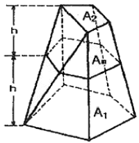
- 양단면 평균법＜각주공식＜중앙단면법
- 양단면 평균법＞각주공식＞중앙단면법
- 양단면 평균법=각주공식=중앙단면법
- 양단면 평균법＜각주공식=중앙단면법
(정답률: 59%)
18. 도로의 기점으로부터 1000.00m 지점에 교점(I.P)이 있고 원곡선의 반지름 R=100m, 교각 I=30°21'일 때 시단현 ℓ1와 종단현 ℓ2의 길이는? (단, 중심선의 말뚝 간격은 20m로 한다.)(오류 신고가 접수된 문제입니다. 반드시 정답과 해설을 확인하시기 바랍니다.)
- ℓ1=7.11m, ℓ2=5.83m
- ℓ1=7.11m, ℓ2=14.11m
- ℓ1=12.89m, ℓ2=5.83m
- ℓ1=12.89m, ℓ2=14.17m
(정답률: 41%)
19. [보기]에서 노선의 종단면도에 기입하여야 할 사항만으로 짝지어진 것은?
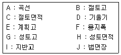
- A, B, D, E, G, I
- A, C, F, H, I, J
- B, C, F, G, H, J
- B, D, E, F, G, I
(정답률: 62%)
20. 수평 및 수직거리 관측의 정확도가 K로 동일할 때 체적측량의 정확도는?
- 2K
- 3K
- 4K
- 5K
(정답률: 51%)
2과목: 사진측량 및 원격탐사
21. 다음 중 제작과정에서 수치표고모형(DEM)이 필요한 사진지도는?
- 정사투영사진지도
- 약조정집성사진지도
- 반조정집성
- 조정집성사진지도
(정답률: 74%)
22. 항공사진 상에 나타난 첨탑의 변위가 5.9mm, 첨탑의 최상부와 연직점 사이의 거리가 54mm, 첨탑의 실제 높이가 72m일 경우 항공기의 촬영고도는?
- 659m
- 787m
- 988m
- 1333m
(정답률: 36%)
23. 수치영상거리 기법 중 특정 추출과 판독에 도움이 되기 위하여 영상의 가시적 판독성을 증강시키기 위한 일련의 처리과정을 무엇이라 하는가?
- 영상분류(image classification)
- 영상강조(image enhancement)
- 정사보정(ortho-rectification)
- 자료융합(daqta merging)
(정답률: 53%)
24. 비행고도 6350m, 사진 I의 주점기선장이 67mm, 사진 Ⅱ의 주점기선장이 70mm일 때 시차차가 1.37mm인 건물의 비고는?
- 107m
- 117m
- 127m
- 137m
(정답률: 39%)
25. 사진상에서 기본변위량에 대한 설명으로 틀린 것은?
- 연직점으로부터 거리와 비례한다.
- 비고와 비례한다.
- 초점거리와는 직접적인 관계가 없다.
- 촬영고도와 비례한다.
(정답률: 45%)
26. 사진의 크기가 23cm×23cm이고 두 사진의 주점기선의 길이가 8cm이었다면 이때의 종중복도는?
- 35%
- 48%
- 56%
- 65%
(정답률: 45%)
27. 그림은 어느 지역의 토지 현황을 나타내고 있다. 이 지역을 촬영한 7×7 영성에서 “호수”의 훈련지역(training field)을 선택한 결과로 적합한 것은?
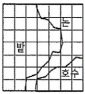
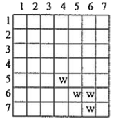
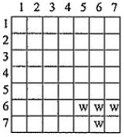
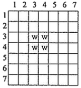
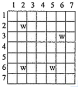
(정답률: 75%)
28. 절대표정(absolute orientation)에 필요한 최소기준점으로 옳은 것은?
- 1점의 (X, Y)좌표 및 2점의 (Z)좌표
- 2점의 (X, Y)좌표 및 1점의 (Z)좌표
- 1점의 (X, Y, Z)좌표 및 2점의 (Z)좌표
- 2점의 (X, Y, Z)좌표 및 1점의 (Z)좌표
(정답률: 50%)
29. 사진크기 23cm×23cm, 축척 1:10000, 종중복도 60%로 초점거리 210mm인 사진기에 의해 평탄한 지형을 촬영하였다. 이 사진의 기선고도비(B/H)는?
- 0.22
- 0.33
- 0.44
- 0.55
(정답률: 53%)
30. 내부표정에 대한 설명으로 옳지 않은 것은?
- 상호표정을 하기 전에 실시한다.
- 사진의 초점거리를 조정한다.
- 축척과 경사를 결정한다.
- 사진의 주점을 맞춘다.
(정답률: 62%)
31. 다음 중 지평선이 사진 상에 찍혀있는 사진은?
- 고각도 경사사진
- 수직사진
- 저각도 경사사진
- 엄밀수직사진
(정답률: 54%)
32. 지표면의 온도를 모니터링하고자 할 경우 가장 적합한 위성영상 자료는?
- IKONOS 위성의 팬크로매틱 영상
- RADARSAT 위성의 SAR 영상
- KOMPSAT 위성의 팬크로매틱 영상
- LANDSAT 위성의 TM 영상
(정답률: 60%)
33. 지도와 사진을 비교할 때, 사진의 특징에 대한 설명으로 틀린 것은?
- 여러 단계의 색조로 높은 정확도의 실체파악을 할 수 있다.
- 일상적으로 사용되는 기호로 기호화하여 정리되어 있으므로 찾아보기 쉽다.
- 인간의 입체적 관찰 능력으로 종합적 실체파악에 우수하다.
- 토지조사에 대한 이용 및 응용 측면에서 활용의 폭이 넓다.
(정답률: 53%)
34. 다음 중 수치표고자료가 수치모델로 제작되고 저장되는 방식이 아닌 것은?
- 불규칙한 삼각형에 의한 방식(TIN)
- 등고선에 의한 방식
- 격자방식(grid)
- 광속조정법에 의한 방식
(정답률: 39%)
35. 표정에 사용되는 각 좌표축별 회전인자 기호가 옳게 짝지어진 것은?
- X축회전-ω, Y축회전-k, Z축회전-Φ
- X축회전-ω, Y축회전-Φ, Z축회전-k
- X축회전-Φ, Y축회전-k, Z축회전-ω
- X축회전-Φ, Y축회전-ω, Z축회전-k
(정답률: 56%)
36. 센서를 크게 수동방식과 능동방식의 센서로 분류할 때 능동방식 센서에 속하는 것은?
- TV 카메라
- 광학스캐너
- 레이다
- 마이크로파 복사계
(정답률: 68%)
37. 표정점 선점을 위한 유의사항으로 옳은 것은?
- 촉선을 연장한 가상점을 선택하여야 한다.
- 시간적으로 일정하게 변하는 점을 선택하여야 한다.
- 원판의 가장자리로부터 1cm 이내에 나타나는 점을 선택하여야 한다.
- 표정점은 X, Y, H가 동시에 정확하게 결정될 수 있는 점을 선택하여야 한다.
(정답률: 62%)
38. 원격탐사용 위성과 관련이 없는 것은?
- VLBI
- GeoEye
- SPOT
- WorldView
(정답률: 49%)
39. 촬영비행조건에 관한 설명으로 틀린 것은?
- 촬영비행은 구름이 많은 흐린 날씨에 주로 행한다.
- 촬영비행은 태양고도가 산지에서는 30°, 평지에서는 25° 이상일 때 행한다.
- 험준한 지형에서는 영상이 잘 나타나는 태양고도의 시간에 행하여야 한다.
- 계획촬영 코스로부터 수평이탈은 계획촬영 고도의 15% 이내로 한다.
(정답률: 71%)
40. 수치사진측량의 특징에 대한 설명으로 옳지 않은 것은?
- 사진에 나타나지 않은 지형지물의 판독이 가능하다.
- 다양한 결과물의 생성이 가능하다.
- 자동화에 의해 효율성이 증가한다.
- 자료의 교환 및 유지관리에 용이하다.
(정답률: 60%)
3과목: GIS 및 GPS
41. 다중분광 수칭영상자료의 저장 형식의 하나로 밴드별로 별도 관리할 수도 있고 모든 밴드를 순차적으로 저장하여 하나의 파일로 통합관리할 수도 있는 저장 방식은?
- BIL(Band Interleaved by Line)
- BIP(Band Interleaved by Pixel)
- BSQ(Band Sequential)
- BSP(Band Separately)
(정답률: 47%)
42. 아래와 같은 Chain-Code를 나타낸 것으로 옳은 것은? (단, 0-동, 1-북, 2-서, 3-남의 방향을 표시)(오류 신고가 접수된 문제입니다. 반드시 정답과 해설을 확인하시기 바랍니다.)
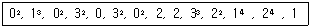
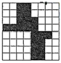
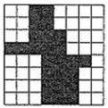
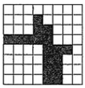
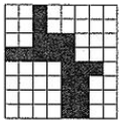
(정답률: 45%)
43. 지리정보시스템(GIS)에서 공간자료의 품질과 관련된 정보(품질서술문에 포함되는 정보)로 거리가 먼 것은?
- 자료의 연혁
- 자료의 포맷
- 논리적 일관성
- 자료의 완전성
(정답률: 53%)
44. GPS 신호가 이중주파수를 채택하고 있는 가장 큰 이유는?
- 대류지연 효과를 제거하기 위함이다.
- 전리층지연 효과를 제거하기 위함이다.
- 신호단절에 대비하기 위함이다.
- 재밍(jammimg)과 같은 신호 방해에 대비하기 위함이다.
(정답률: 55%)
45. 지리정보시스템(GIS)의 주요 기능에 대한 설명으로 가장 거리가 먼 것은?
- 효율적인 수치지도 제작을 통해 지도의 내용과 활용성을 높인다.
- 효율적인 GIS 데이터 모델을 적용하여 다양한 분석기능 및 모델링이 가능하다.
- 입지분석, 하천분석 교통분석, 가시권분석, 환경분석, 상권설정 및 분석 등을 통해 고부가가치 정보 및 지식을 창출한다.
- 조직의 인사 관리 및 관리자의 조직운영 결정 기능을 지원한다.
(정답률: 69%)
46. 축척 1:5000 수치지도를 만든 후, 데이터의 정확도 검증을 위해 10개의 지점에 대해 수치지도 상에서 측정한 좌표와 현장에서 검증한 좌표 간의 오차가 아래와 같을 때, 위치정확도(RMSE)로 옳은 것은?
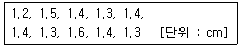
- ±0.98
- ±1.22
- ±1.46
- ±1.59
(정답률: 39%)
47. 지리정보시스템(GIS)의 공간성분에서 선형의 공간객체 특성을 이용한 관망(Network) 분석을 통해 얻을 수 있는 결과와 거리가 먼 것은?
- 도로, 하천, 선형의 관로 등에 걸리는 부하의 예측
- 하나의 지점에서 다른 지점으로 이동 시 최적 경로의 선정
- 창고나 보급소, 경찰서, 소방서와 같은 주요 시설물의 위치 선정
- 특정 주거지역의 면적 산정과 인구 파악을 통한 인구 밀도의 계산
(정답률: 70%)
48. 벡터 데이터 모델은 기본적인 도형의 요소(geometric primitive type)로 공간 객체를 표현한다. [보기] 중 기본적인 도형의 요소로 모두 짝지어진 것은?
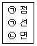
- ㉠
- ㉠, ㉡
- ㉡, ㉢
- ㉠, ㉡, ㉢
(정답률: 73%)
49. 지리정보시스템(GIS)의 분석기능 중 대상들의 상호간에 이어지거나 관계가 있음을 평가하는 기능은?
- 중첩기능(overlay function)
- 연결기능(connectivity function)
- 인접기능(neighborhood function)
- 측정, 검색, 분류기능(measurement, query, classification)
(정답률: 54%)
50. 지리정보시스템(GIS)의 자료수집방법으로서 래스터(격자 데이터)를 얻기 위한 방법과 거리가 먼 것은?
- GNSS 측량을 통한 좌표 취득
- 항공사진으로부터 수치정사사진의 작성
- 다중밴즈 위성영상으로부터 토지피복 분류
- 위성영상의 기하보정 및 영상 정합
(정답률: 38%)
51. 지리정보시스템(GIS)의 3대 기본 구성 요소로 다음 중 가장 거리가 먼 것은?
- 인터넷
- 하드웨어
- 스프트웨어
- 데이터베이스
(정답률: 77%)
52. 지리정보시스템(GIS) 자료구조에 대한 설명으로 옳지 않은 것은?
- 벡터 구조에서는 각 객체의 위치가 공간좌표체계에 의해 표시된다.
- 벡터 구조는 래스터 구조보다 객체의 형상이 현실에 가깝게 표현된다.
- 래스터 구조에서는 객체의 공간좌표에 대한 정보가 존재하지 않는다.
- 래스터 구조에서 수치값은 해당 위치의 관련정보를 표현한다.
(정답률: 58%)
53. 기준국을 고정하여 기계를 설치하고 이동국으로 측량하며 모뎀 등을 이용하여 실시간으로 좌표를 얻음으로써 현황측량 등에 이용하는 GNSS 측량 기법은?
- DGPS
- RTK
- PPP
- PPK
(정답률: 69%)
54. 지리정보시스템(GIS)을 이용하는 주체를 GIS 전문가, GIS 활용가, GIS 일반 사용자로 구분할 때 GIS 전문가의 역할로 거리가 먼 것은?
- 시설물 관리
- 프로젝트 관리
- 데이터베이스 관리
- 시스템 분석 및 설계
(정답률: 67%)
55. GNSS 측량으로 직접 수행하기 어려운 것은?
- 절대측위
- 상대측위
- 시각동기
- 터널 내 공사측량
(정답률: 70%)
56. GPS위성에 대한 설명으로 틀린 것은?
- GPS위성의 고도는 약 20200km이며, 주기는 약 12시간으로 근 원형궤도를 돌고 있다.
- GPS위성의 배치는 각 60° 간격으로 6개의 궤도면에 매 궤도마다 최소 4개의 위성이 배치된다.
- GPS위성은 최소 두 개의 반송파 신호(L1과 L2)를 송신한다.
- GPS위성을 통해 얻어진 위치는 3차원 좌표로 높이의 결과가 지상측량보다 정확하다.
(정답률: 49%)
57. 다중경로(멀티패스) 오차를 줄일 수 있는 방법으로 적합하지 않는 것은?
- 관측시간을 길게 한다.
- 낮은 고도의 위성신호가 높은 고도의 위성신호보다 다중경로에 유리하다.
- 안테나의 설치환경(위치)을 잘 선택한다.
- Choke Ring 안테나 혹은 Greund Plane이 장착된 안테나를 사용한다.
(정답률: 62%)
58. 부울논리(Boolean Logic)를 이용하여 속성과 공간적 특성에 대한 자료 검색(검게 채색된 부분)을 위한 방법은?
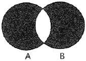
- A AND B
- A XOR B
- A NOT B
- A OR B
(정답률: 59%)
59. 기존의 지형도나 지도를 수치적으로 전산입력하기 위한 입력장치가 아닌 것은?
- 키보드
- 마우스
- 플로터
- 디지타이저
(정답률: 67%)
60. 지리정보시스템(GIS)에서 사용되는 용어에 대한 설명 중 옳지 않은 것은?
- Clip : 원래의 레이어에서 필요한 지역만을 추출해 내는 것이다.
- Erase : 레이어가 나타내는 지역 중 임의지역을 삭제하는 과정이다.
- Split : 하나의 레이어를 여러 개의 레이어로 분할하는 과정이다.
- Difference : 두 개의 레이어가 교차하는 부분에 대한 지오메트리를 얻는다.
(정답률: 63%)
4과목: 측량학
61. 토털스테이션이 주로 활용되는 측량 작업과 가장 거리가 먼 것은?
- 지형측량과 같이 많은 점의 평면 및 표고좌표가 필요한 측량
- 고정밀도를 요하는 국가기준점 측량
- 거리와 각을 동시에 관측하면 작업효율이 높아지는 트래버스 측량
- 비교적 높은 정밀도가 필요하지 않은 기준점 측량
(정답률: 38%)
62. 측량 시 발생하는 오차의 종류로 수학적, 물리적인 법칙에 따라 일정하게 발생되는 오차는?
- 정오차
- 참오차
- 과대오차
- 우연오차
(정답률: 72%)
63. 그림의 교호수준측량의 결과이다. B점의 표고는? (단, A점의 표고는 50m이다.)
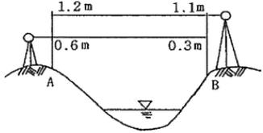
- 49.8m
- 50.2m
- 52.2m
- 52.6m
(정답률: 54%)
64. 레벨(Level)의 조정에 관한 사항으로 옳지 않은 것은?
- 기포관측은 연직축에 직교해야 한다.
- 시준선은 기포관측에 평행해야 한다.
- 십자종선과 시준선은 평행해야 한다.
- 십자횡선은 연직축에 직교해야 한다.
(정답률: 45%)
65. 두 점의 거리 관측을 A, B, C 세 사람이 실시하여 A는 4회 관측의 평균이 120.58m이고, B는 2회 관측의 평균이 120.51m, C는 7회 관측의 평균이 120.62m이라면 이 거리의 최확값은?
- 120.55m
- 120.57m
- 120.59m
- 120.62m
(정답률: 46%)
66. 결합 트래버스에서 A점에서 B점까지의 합위거가 152.70m, 합경거가 653.70m일 때 폐합오차는? (단. A점 좌표 XA=76.80m, YA=97.20m, B점 좌표 XB=229.62m, YB=750.85m)
- 0.11m
- 0.12m
- 0.13m
- 0.14m
(정답률: 37%)
67. 두 점간의 거리를 각 팀별로 수십번 측량하여 최확값을 계산하고 각 관측값의 오차를 계산하여 도수분포그래프로 그려보았다. 가장 정밀하면서 동시에 정확하게 측량한 팀은?
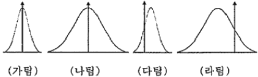
- 가팀
- 나팀
- 다팀
- 라팀
(정답률: 60%)
68. 삼변측량결과인 a, b, c변 길이를 이용하여 반각공식으로 A지점의 각을 계산하고자 할 때, 옳은 식은? (단,
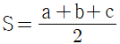
)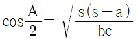
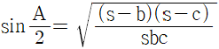
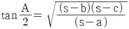
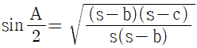
(정답률: 44%)
69. 지구의 적도반지름이 6370km이고 편평률이 1/299이라고 하면 적도반지름과 극반지름의 차이는?
- 21.3km
- 31.0km
- 40.0km
- 42.6km
(정답률: 57%)
70. 삼각측량에서 유심다각망 조정에 해당하지 않는 것은?
- 각 조건에 대한 조정
- 관측정 조건에 대한 조정
- 변 조건에 대한 조정
- 표고 조건에 대한 조정
(정답률: 61%)
71. 지형도의 축척 1:1000, 등고선 간격 1.0m, 경사 2%일 때, 등고선 간의 도상수평거리는?
- 0.1cm
- 1.0cm
- 0.5cm
- 5.0cm
(정답률: 33%)
72. 등고선의 성질에 대한 설명으로 틀린 것은?
- 동일 등고선 위의 점은 높이가 같다.
- 등고선의 간격이 좁아지면 지표면의 경사가 급해진다.
- 등고선은 반드시 교차하지 않는다.
- 등고선은 반드시 폐합하게 된다.
(정답률: 57%)
73. 트래버스측량에서 거리 관측과 각 관측의 정밀도가 균형을 이룰 때 거리 관측의 허용오차를 1/5000로 한다면 각 관측의 허용오차는?
- 25“
- 30“
- 38“
- 41“
(정답률: 36%)
74. 지오이드에 대한 설명으로 옳지 않은 것은?
- 위치에너지 E=mgh가 “0”이 되는 면이다.
- 지구타원체를 기준으로 대륙에서는 낮고 해양에서는 높다.
- 평균해수면을 육지내부까지 연장한 면을 말한다.
- 지오이드의 법선과 타원체의 법선은 불일치하며 그 양을 연직선 편차라 한다.
(정답률: 56%)
75. 측량기록의 정의로 옳은 것은?
- 당해 측량에서 얻은 최종결과
- 측량계획과 실시결과에 관한 공문 기록
- 측량을 끝내고 내업에서 얻은 최종결과의 심사 기록
- 측량성과를 얻을 때까지의 측량에 관한 작업의 기록
(정답률: 69%)
76. 기본측량을 실시하여 측량성과를 고시할 때 포함되어야 할 사항과 거리가 먼 것은?
- 측량의 종류
- 측량실시 기관
- 측량성과의 보관 장소
- 설치한 측량기준점의 수
(정답률: 39%)
77. 성능검사를 받아야 하는 금속관로탐지기의 성능검사 주기로 옳은 것은?
- 1년
- 2년
- 3년
- 4년
(정답률: 75%)
78. 우리나라 위치측정의 기준이 되는 세계측지계에 대한 설명이다. ()안에 알맞은 용어로 짝지어진 것은?
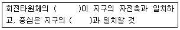
- 장축, 투영중심
- 단축, 투영중심
- 장축, 질량중심
- 단축, 질량중심
(정답률: 44%)
79. 일반측량성과 및 일반측량기록 사본의 제출을 요구할 수 있는 경우에 해당되지 않는 것은?
- 측량의 기술 개발을 위하여
- 측량의 정확도 확보를 위하여
- 측량의 중복 배제를 위하여
- 측량에 관한 자료의 수집ㆍ분석을 위하여
(정답률: 54%)
80. 다음 중 가장 무거운 벌칙의 기준이 적용되는 자는?
- 측량성과를 위조한 자
- 입찰의 공정성을 해친 자
- 측량기준점표지를 파손한 자
- 측량업 등록을 하지 아니하고 측량업을 영위한 자
(정답률: 65%)